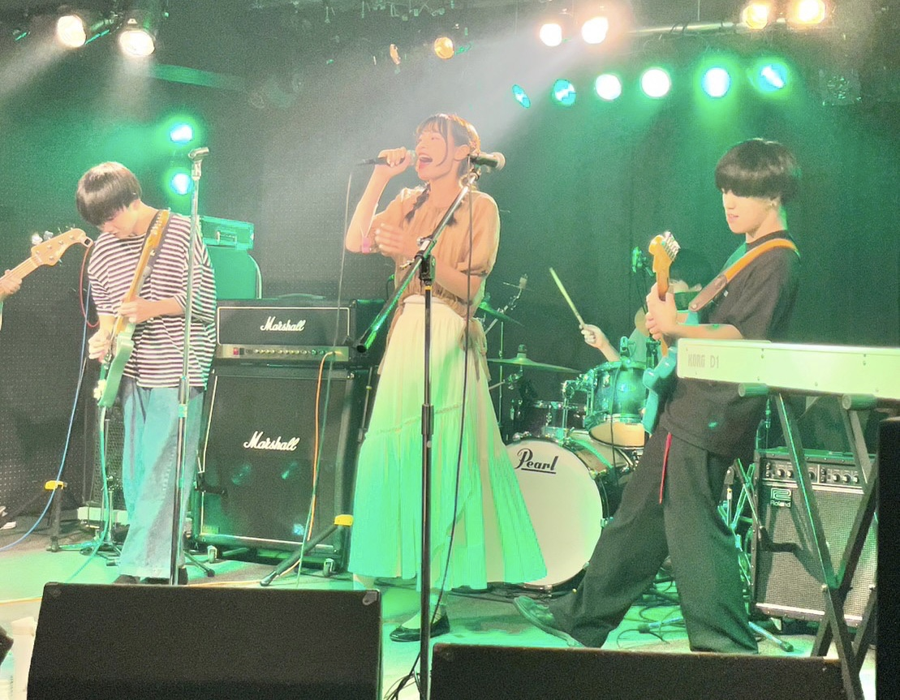
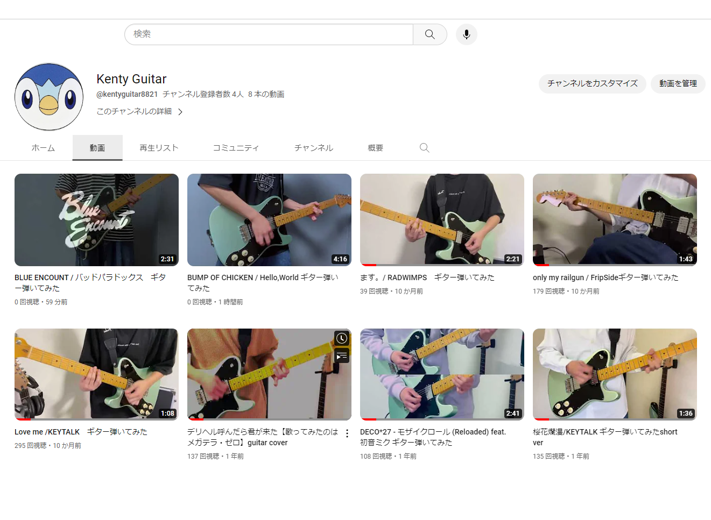
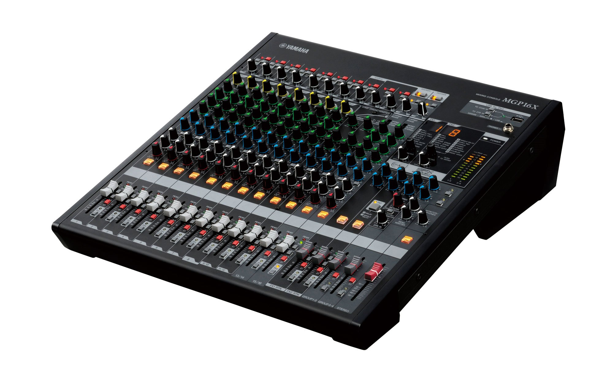

軽音楽サークル

軽音サークルに所属し、ギターパートを担当しています。
軽音部では１年を通して絶え間なくライブを開催しています。(新入生歓迎ライブ、夏定ライブ、文化祭ライブ、冬定ライブ、卒業ライブ)
１つのライブで複数のコピーバンドを組んで出演することが多いので、ライブ前はたくさんの時間をバンド練習に費やしています
思い返すと大学生活のほとんどを軽音サークルで過ごしていたと言っても過言ではないと思います。
弾いてみた動画投稿

Youtube,Instagram,Twitterでギターの演奏動画を投稿しています。
普段は邦ロック、ボカロ、アニソンの好きな曲をギターで演奏しています。演奏・Mix・マスタリング・動画編集を１人でやってます。
弾いてみた動画や軽音サークルの活動を通じて得た経験をもとに、作曲にも挑戦中です。卒業までにライブでも披露出来たらいいなと思ってます。
PA

ブライダルの音響・照明を担当するPAをアルバイトでやっています。
2023年4月から始めたので、まだ研修中ですが最近は一通りの流れを出来るようになりました。
実際の披露宴でPAが出来るように練習を積み重ねていきたいと思います。